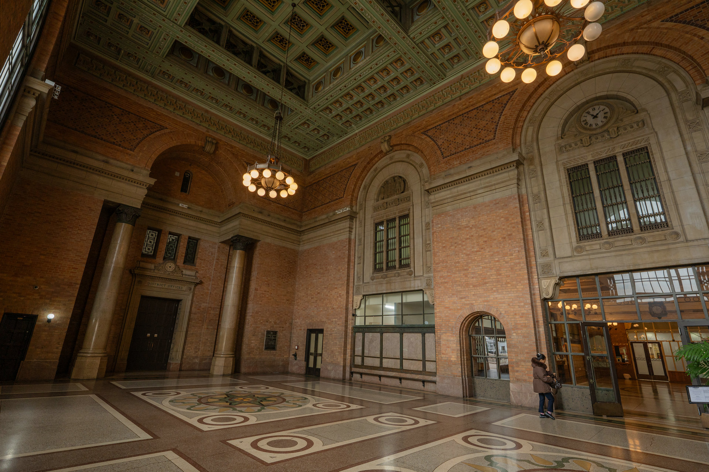
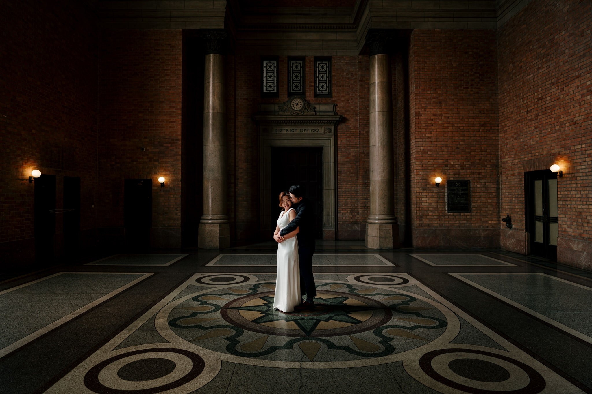

A setting for arrivals, receptions and photographs
The Grand Foyer brings together expansive arched windows, ornate chandeliers and vividly detailed ceilings. Heritage glass floods the concourse with natural light, creating a visually rich setting with a strong sense of openness.
It works equally well as a destination in its own right or as the arrival and transition space for an event extending into the Grand Hall.
Explore weddings in the Grand FoyerArrive, welcome, create
- Wedding ceremonies and portraits
- Guest arrival and registration
- Drinks receptions and exhibition displays
- Fashion and editorial photography
- Film shoots and creative showcases
Light, structure and movement




More photographs





Experience the light in person
Share your event, production or photography requirements with the venue team.